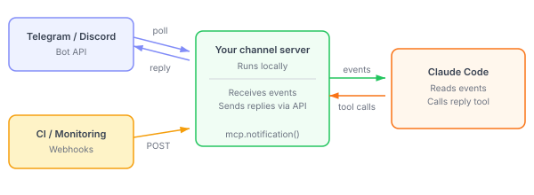
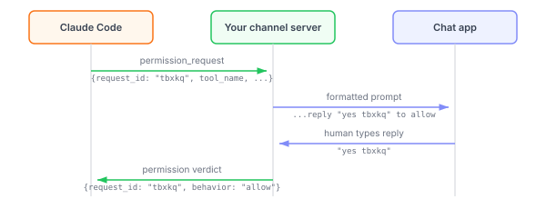

Channels 参考
构建一个 MCP 服务器，将 webhooks、警报和聊天消息推送到 Claude Code 会话中。频道合约的参考：能力声明、通知事件、回复工具、发送者门控和权限中继。
Channel 是一个 MCP 服务器，它将事件推送到 Claude Code 会话中，以便 Claude 可以对终端外发生的事情做出反应。
您可以构建单向或双向频道。单向频道转发警报、webhooks 或监控事件供 Claude 处理。双向频道（如聊天桥接）也公开回复工具，以便 Claude 可以发送消息回复。具有受信任发送者路径的频道也可以选择加入中继权限提示，以便您可以远程批准或拒绝工具使用。
本页涵盖：
- 概述：频道如何工作
- 您需要什么：要求和一般步骤
- 示例：构建 webhook 接收器：最小单向演练
- 服务器选项：构造函数字段
- 通知格式：事件有效负载和传递行为
- 公开回复工具：让 Claude 发送消息回复
- 门控入站消息：发送者检查以防止提示注入
- 中继权限提示：将工具批准提示转发到远程频道
要使用现有频道而不是构建一个，请参阅 Channels。Telegram、Discord、iMessage 和 fakechat 包含在研究预览中。
概述
Channel 是一个在与 Claude Code 相同的机器上运行的 MCP 服务器。Claude Code 将其作为子进程生成并通过 stdio 进行通信。您的频道服务器是外部系统和 Claude Code 会话之间的桥梁：
- 聊天平台（Telegram、Discord）：您的插件在本地运行并轮询平台的 API 以获取新消息。当有人向您的机器人发送 DM 时，插件接收消息并将其转发给 Claude。无需公开 URL。
- Webhooks（CI、监控）：您的服务器在本地 HTTP 端口上侦听。外部系统 POST 到该端口，您的服务器将有效负载推送到 Claude。

您需要什么
唯一的硬性要求是 @modelcontextprotocol/sdk 包和 Node.js 兼容的运行时。Bun、Node 和 Deno 都可以工作。研究预览中的预构建插件使用 Bun，但您的频道不一定要使用。
您的服务器需要：
- 声明
claude/channel能力，以便 Claude Code 注册通知侦听器 - 当发生某事时发出
notifications/claude/channel事件 - 通过 stdio transport 连接
服务器选项和通知格式部分详细介绍了每一项。有关完整演练，请参阅示例：构建 webhook 接收器。
在研究预览期间，自定义频道不在批准的允许列表上。使用 --dangerously-load-development-channels 在本地测试。有关详细信息，请参阅在研究预览期间测试。
示例：构建 webhook 接收器
本演练将构建一个单文件服务器，它监听 HTTP 请求并将其转发到您的 Claude Code 会话中。完成后，任何能够发送 HTTP POST 的对象，例如 CI 流水线、监控告警或 curl 命令，都可以向 Claude 推送事件。
本示例使用 Bun 作为运行时，因为它内置了 HTTP 服务器和 TypeScript 支持。您也可以改用 Node 或 Deno；唯一的要求是 MCP SDK。
1. 创建项目
权限中继示例会直接导入 zod，因此需要将其与 MCP SDK 一起安装。创建一个新目录并安装两者：
mkdir webhook-channel && cd webhook-channel
bun add @modelcontextprotocol/sdk zod
2. 编写频道服务器
创建一个名为 webhook.ts 的文件。这就是您的整个频道服务器：它通过 stdio 连接到 Claude Code，并在端口 8788 上监听 HTTP POST。当请求到达时，它会将请求体作为频道事件推送给 Claude。
#!/usr/bin/env bun
import { Server } from '@modelcontextprotocol/sdk/server/index.js'
import { StdioServerTransport } from '@modelcontextprotocol/sdk/server/stdio.js'
// Create the MCP server and declare it as a channel
const mcp = new Server(
{ name: 'webhook', version: '0.0.1' },
{
// this key is what makes it a channel — Claude Code registers a listener for it
capabilities: { experimental: { 'claude/channel': {} } },
// Claude Code delivers this to Claude as context when the server connects, so it knows how to handle these events
instructions: 'Events from the webhook channel arrive as <channel source="webhook" ...>. They are one-way: read them and act, no reply expected.',
},
)
// Connect to Claude Code over stdio (Claude Code spawns this process)
await mcp.connect(new StdioServerTransport())
// Start an HTTP server that forwards every POST to Claude
Bun.serve({
port: 8788, // any open port works
// localhost-only: nothing outside this machine can POST
hostname: '127.0.0.1',
async fetch(req) {
const body = await req.text()
await mcp.notification({
method: 'notifications/claude/channel',
params: {
content: body, // becomes the body of the <channel> tag
// each key becomes a tag attribute, e.g. <channel path="/" method="POST">
meta: { path: new URL(req.url).pathname, method: req.method },
},
})
return new Response('ok')
},
})
该文件依次配置服务器、通过 stdio 连接，并启动 HTTP 监听器：
- 服务器配置：创建在其 capabilities 中包含
claude/channel的 MCP 服务器，正是这一点告诉 Claude Code 这是一个频道。服务器连接时，Claude Code 会将instructions字符串作为上下文传递给 Claude：告诉 Claude 应预期哪些事件、是否需要回复，以及如需回复应如何路由回复。 - Stdio 连接：通过 stdin/stdout 连接到 Claude Code。这对任何 MCP 服务器来说都是标准做法。
- HTTP 监听器：在端口 8788 上启动本地 Web 服务器。每个 POST 请求体都会通过
mcp.notification()作为频道事件转发给 Claude。content成为事件正文，每个meta条目成为<channel>标签上的一个属性。监听器需要访问mcp实例，因此它在同一进程中运行。对于较大的项目，您可以将其拆分为单独的模块。
3. 向 Claude Code 注册您的服务器
将服务器添加到您的 MCP 配置中，以便 Claude Code 知道如何启动它。对于同一目录中的项目级 .mcp.json，请使用相对路径。对于 ~/.claude.json 中的用户级配置，请使用完整的绝对路径，以便从任何项目都能找到该服务器：
{
"mcpServers": {
"webhook": { "command": "bun", "args": ["./webhook.ts"] }
}
}
Claude Code 在启动时读取您的 MCP 配置，并将每个服务器作为子进程启动。
4. 测试
在研究预览期间，自定义频道不在允许列表中，因此请使用开发标志启动 Claude Code：
claude --dangerously-load-development-channels server:webhook
Claude Code 首先会显示一个全屏警告对话框，列出您正在加载的开发频道。选择 I am using this for local development 继续，或选择 Exit 退出。
当您首次在此项目中启动会话时，Claude Code 还会在使用 .mcp.json 中的新服务器之前征求您的同意。对话框会显示"New MCP server found in this project: webhook"。选择 Use this MCP server 继续。
接受后，Claude Code 会将您的 webhook.ts 作为子进程启动，HTTP 监听器会在您配置的端口（本示例中为 8788）上自动启动。您无需自行运行服务器。
启动横幅下方的一条暗色提示会确认频道已注册：Channels (experimental) messages from server:webhook inject directly in this session · restart without --dangerously-load-development-channels to stop。
如果您看到"blocked by org policy"，则需要您的组织管理员先启用频道。
在另一个终端中，通过向服务器发送带有消息的 HTTP POST 来模拟 webhook。本示例向端口 8788（或您配置的任何端口）发送一条 CI 失败告警：
curl -X POST localhost:8788 -d "build failed on main: https://ci.example.com/run/1234"
负载会以 <channel> 标签的形式到达 Claude 的上下文：
<channel source="webhook" path="/" method="POST">
build failed on main: https://ci.example.com/run/1234
</channel>
您的终端会将该事件渲染为单行摘要 ← webhook: build failed on main: https://ci.example.com/run/1234，而不是原始标签。随后您会看到 Claude 开始响应：读取文件、运行命令，或执行消息所要求的任何操作。这是一个单向频道，因此 Claude 会在您的会话中采取行动，但不会通过 webhook 发回任何内容。要添加回复功能，请参阅公开回复工具。
如果事件没有到达，诊断方法取决于 curl 返回的结果：
curl成功但没有任何内容到达 Claude：在会话中运行/mcp检查服务器状态。failed状态通常表示服务器文件中存在依赖或导入错误。要查看 stderr 跟踪信息，请使用claude --debug --dangerously-load-development-channels server:webhook重新启动，并检查位于~/.claude/debug/<session-id>.txt的调试日志。curl失败并显示"connection refused"：端口要么尚未绑定，要么被先前运行遗留的进程占用。lsof -i :<port>可显示正在监听的进程；在重新启动会话之前，请先kill掉遗留进程。
fakechat 服务器在此模式的基础上进行了扩展，增加了 Web UI、文件附件以及用于双向聊天的回复工具。
在研究预览期间测试
在研究预览期间，每个频道都必须在批准的允许列表上才能注册。开发标志在确认提示后绕过特定条目的允许列表。此示例显示两种条目类型：
# 测试您正在开发的插件
claude --dangerously-load-development-channels plugin:yourplugin@yourmarketplace
# 测试裸 .mcp.json 服务器（尚无插件包装器）
claude --dangerously-load-development-channels server:webhook
请在交互式会话中使用开发标志，以便 Claude Code 能够显示确认提示。如果您在非交互模式下通过 -p 或通过 Agent SDK 传递该标志，Claude Code 会忽略该标志，频道也不会注册。
绕过是按条目的。将此标志与 --channels 结合不会将绕过扩展到 --channels 条目。在研究预览期间，您的频道不在批准的允许列表上，因此在您构建和测试时它保持在开发标志上。
此标志仅跳过允许列表。channelsEnabled 组织政策仍然适用。不要使用它来运行来自不受信任来源的频道。
服务器选项
频道在 Server 构造函数中设置这些选项。instructions 和 capabilities.tools 字段是标准 MCP；capabilities.experimental['claude/channel'] 和 capabilities.experimental['claude/channel/permission'] 是频道特定的添加：
| 字段 | 类型 | 描述 |
|---|---|---|
capabilities.experimental['claude/channel'] |
object |
必需。始终为 {}。存在注册通知侦听器。 |
capabilities.experimental['claude/channel/permission'] |
object 或 false |
可选。将其设置为 {} 以声明此频道可以接收权限中继请求。声明后，Claude Code 将工具批准提示转发到您的频道，以便您可以远程批准或拒绝它们。要选择退出，请省略该键或将其设置为 false。在 v2.1.234 之前，Claude Code 将 false 视为已声明。请参阅中继权限提示。 |
capabilities.tools |
object |
仅双向。始终为 {}。标准 MCP 工具能力。请参阅公开回复工具。 |
instructions |
string |
推荐。Claude Code 在服务器连接时将其作为上下文传递给 Claude。告诉 Claude 期望什么事件、<channel> 标签属性的含义、是否回复，如果是，使用哪个工具以及传回哪个属性（如 chat_id）。 |
要创建单向频道，请省略 capabilities.tools。此示例显示双向设置，其中频道能力、工具和说明已设置：
import { Server } from '@modelcontextprotocol/sdk/server/index.js'
const mcp = new Server(
{ name: 'your-channel', version: '0.0.1' },
{
capabilities: {
experimental: { 'claude/channel': {} }, // 注册频道侦听器
tools: {}, // 对于单向频道省略
},
// Claude Code 在服务器连接时将其作为上下文传递给 Claude，以便它知道如何处理您的事件
instructions: 'Messages arrive as <channel source="your-channel" ...>. Reply with the reply tool.',
},
)
通知格式
您的服务器使用两个参数发出 notifications/claude/channel：
| 字段 | 类型 | 描述 |
|---|---|---|
content |
string |
事件主体。作为 <channel> 标签的主体传递。 |
meta |
Record<string, string> |
可选。每个条目成为 <channel> 标签上的属性，用于路由上下文，如聊天 ID、发送者名称或警报严重性。键必须是标识符：仅字母、数字和下划线。包含连字符或其他字符的键会被静默删除。 |
您的服务器通过在 Server 实例上调用 mcp.notification() 来推送事件。此示例推送带有两个元键的 CI 失败警报：
await mcp.notification({
method: 'notifications/claude/channel',
params: {
content: 'build failed on main: https://ci.example.com/run/1234',
meta: { severity: 'high', run_id: '1234' },
},
})
事件在 Claude 的上下文中到达，包装在 <channel> 标签中。source 属性从您的服务器配置的名称自动设置：
<channel source="your-channel" severity="high" run_id="1234">
build failed on main: https://ci.example.com/run/1234
</channel>
Claude Code 不确认通知。mcp.notification() 上的 await 在消息写入传输时解析，而不是在 Claude 处理它时解析。如果会话尚未将您的服务器加载为频道，或组织政策阻止它，Claude Code 会静默删除事件，不会向您的服务器返回错误。
如果您需要传递确认，请在您的服务器中跟踪事件状态，并公开一个回复工具，Claude 可以调用它来报告状态回来。
事件排队进入会话并按顺序处理。如果在 Claude 忙碌时有多个通知到达，它们会在下一个轮次一起传递，Claude 将它们作为一个组处理。要并发处理独立事件流，请运行单独的会话。
公开回复工具
如果您的频道是双向的，如聊天桥接而不是警报转发器，请公开一个标准 MCP 工具，Claude 可以调用它来发送消息回复。关于工具注册的任何内容都不是频道特定的。回复工具有三个组件：
- 您的
Server构造函数能力中的tools: {}条目，以便 Claude Code 发现工具 - 定义工具的架构并实现发送逻辑的工具处理程序
- 您的
Server构造函数中的instructions字符串，告诉 Claude 何时以及如何调用工具
要将这些添加到上面的webhook 接收器：
1. 启用工具发现
在您的 Server 构造函数中的 webhook.ts 中，将 tools: {} 添加到能力中，以便 Claude Code 知道您的服务器提供工具：
capabilities: {
experimental: { 'claude/channel': {} },
tools: {}, // 启用工具发现
},
2. 注册回复工具
将以下内容添加到 webhook.ts。import 与您的其他导入一起位于文件顶部；两个处理程序位于 Server 构造函数和 mcp.connect() 之间。这注册了一个 reply 工具，Claude 可以使用 chat_id 和 text 调用它：
// 在 webhook.ts 顶部添加此导入
import { ListToolsRequestSchema, CallToolRequestSchema } from '@modelcontextprotocol/sdk/types.js'
// Claude 在启动时查询此项以发现您的服务器提供什么工具
mcp.setRequestHandler(ListToolsRequestSchema, async () => ({
tools: [{
name: 'reply',
description: 'Send a message back over this channel',
// inputSchema 告诉 Claude 要传递什么参数
inputSchema: {
type: 'object',
properties: {
chat_id: { type: 'string', description: 'The conversation to reply in' },
text: { type: 'string', description: 'The message to send' },
},
required: ['chat_id', 'text'],
},
}],
}))
// Claude 想要调用工具时调用此项
mcp.setRequestHandler(CallToolRequestSchema, async req => {
if (req.params.name === 'reply') {
const { chat_id, text } = req.params.arguments as { chat_id: string; text: string }
// send() 是您的出站：POST 到您的聊天平台，或用于本地
// 测试下面完整示例中显示的 SSE 广播。
send(`Reply to ${chat_id}: ${text}`)
return { content: [{ type: 'text', text: 'sent' }] }
}
throw new Error(`unknown tool: ${req.params.name}`)
})
3. 更新说明
更新您的 Server 构造函数中的 instructions 字符串，以便 Claude 知道通过工具将回复路由回去。此示例告诉 Claude 从入站标签传递 chat_id：
instructions: 'Messages arrive as <channel source="webhook" chat_id="...">. Reply with the reply tool, passing the chat_id from the tag.'
这是完整的 webhook.ts，具有双向支持。出站回复通过 GET /events 使用 Server-Sent Events (SSE) 流式传输，因此 curl -N localhost:8788/events 可以实时观看它们；入站聊天到达 POST /：
#!/usr/bin/env bun
import { Server } from '@modelcontextprotocol/sdk/server/index.js'
import { StdioServerTransport } from '@modelcontextprotocol/sdk/server/stdio.js'
import { ListToolsRequestSchema, CallToolRequestSchema } from '@modelcontextprotocol/sdk/types.js'
// --- 出站：写入 /events 上的任何 curl -N 侦听器 ---
// 真实的桥接会改为 POST 到您的聊天平台。
const listeners = new Set<(chunk: string) => void>()
function send(text: string) {
const chunk = text.split('\n').map(l => `data: ${l}\n`).join('') + '\n'
for (const emit of listeners) emit(chunk)
}
const mcp = new Server(
{ name: 'webhook', version: '0.0.1' },
{
capabilities: {
experimental: { 'claude/channel': {} },
tools: {},
},
instructions: 'Messages arrive as <channel source="webhook" chat_id="...">. Reply with the reply tool, passing the chat_id from the tag.',
},
)
mcp.setRequestHandler(ListToolsRequestSchema, async () => ({
tools: [{
name: 'reply',
description: 'Send a message back over this channel',
inputSchema: {
type: 'object',
properties: {
chat_id: { type: 'string', description: 'The conversation to reply in' },
text: { type: 'string', description: 'The message to send' },
},
required: ['chat_id', 'text'],
},
}],
}))
mcp.setRequestHandler(CallToolRequestSchema, async req => {
if (req.params.name === 'reply') {
const { chat_id, text } = req.params.arguments as { chat_id: string; text: string }
send(`Reply to ${chat_id}: ${text}`)
return { content: [{ type: 'text', text: 'sent' }] }
}
throw new Error(`unknown tool: ${req.params.name}`)
})
await mcp.connect(new StdioServerTransport())
let nextId = 1
Bun.serve({
port: 8788,
hostname: '127.0.0.1',
idleTimeout: 0, // 不要关闭空闲 SSE 流
async fetch(req) {
const url = new URL(req.url)
// GET /events：SSE 流，以便 curl -N 可以实时观看 Claude 的回复
if (req.method === 'GET' && url.pathname === '/events') {
const stream = new ReadableStream({
start(ctrl) {
ctrl.enqueue(': connected\n\n') // 所以 curl 立即显示一些内容
const emit = (chunk: string) => ctrl.enqueue(chunk)
listeners.add(emit)
req.signal.addEventListener('abort', () => listeners.delete(emit))
},
})
return new Response(stream, {
headers: { 'Content-Type': 'text/event-stream', 'Cache-Control': 'no-cache' },
})
}
// POST：作为频道事件转发给 Claude
const body = await req.text()
const chat_id = String(nextId++)
await mcp.notification({
method: 'notifications/claude/channel',
params: {
content: body,
meta: { chat_id, path: url.pathname, method: req.method },
},
})
return new Response('ok')
},
})
fakechat 服务器显示了一个更完整的示例，具有文件附件和消息编辑。
门控入站消息
未门控的频道是提示注入向量。任何可以到达您的端点的人都可以在 Claude 前面放置文本。侦听聊天平台或公共端点的频道需要在发出任何内容之前进行真正的发送者检查。
在调用 mcp.notification() 之前，根据允许列表检查发送者。此示例删除来自不在集合中的发送者的任何消息：
const allowed = new Set(loadAllowlist()) // 从您的 access.json 或等效项
// 在您的消息处理程序中，在发出之前：
if (!allowed.has(message.from.id)) { // 发送者，不是房间
return // 静默删除
}
await mcp.notification({ ... })
根据发送者的身份而不是聊天或房间身份进行门控：示例中的 message.from.id，而不是 message.chat.id。在群组聊天中，这些不同，根据房间进行门控会让已列入允许列表的群组中的任何人向会话注入消息。
Telegram 和 Discord 频道以相同的方式在发送者允许列表上进行门控。它们通过配对引导列表。有关完整配对流程，请参阅任一实现。iMessage 频道采用不同的方法：它在启动时从 Messages 数据库检测用户自己的地址，并自动让它们通过，其他发送者通过句柄添加。
中继权限提示
当 Claude 调用需要批准的工具时，本地终端对话打开，会话等待。双向频道可以选择加入以在并行接收相同的提示，并将其中继到您的另一台设备。两者都保持活动：您可以在终端或手机上回答，Claude Code 应用先到达的任何答案并关闭另一个。
中继涵盖工具使用批准，如 Bash、Write 和 Edit。项目信任和 MCP 服务器同意对话不中继；这些仅在本地终端中出现。
Claude Code v2.1.234 及更高版本仅向其为会话注册为频道的服务器发送权限请求，因此中继位于与会话选择加入和组织控制相同的后面。中继还要求您使用 --channels 或开发标志选择加入服务器，并要求服务器声明权限能力。
中继如何工作
当权限提示打开时，中继循环有四个步骤：
- Claude Code 生成一个短请求 ID 并通知您的服务器
- 您的服务器将提示和 ID 转发到您的聊天应用
- 远程用户使用该 ID 回复是或否
- 您的入站处理程序将回复解析为判决，Claude Code 仅在 ID 匹配开放请求时应用它
本地终端对话在所有这一切中保持打开。如果终端上的某人在远程判决到达之前回答，该答案将被应用，待处理的远程请求将被删除。

权限请求字段
来自 Claude Code 的出站通知是 notifications/claude/channel/permission_request。与频道通知一样，传输是标准 MCP，但方法和架构是 Claude Code 扩展。params 对象有四个字符串字段，您的服务器将其格式化为出站提示：
| 字段 | 描述 |
|---|---|
request_id |
从 a-z 中抽取的五个小写字母，不包括 l，因此在手机上输入时永远不会读作 1 或 I。将其包含在您的出站提示中，以便可以在回复中回显。Claude Code 仅接受携带其发出的 ID 的判决。本地终端对话不显示此 ID，因此您的出站处理程序是了解它的唯一方式。 |
tool_name |
Claude 想要使用的工具的名称，例如 Bash 或 Write。 |
description |
此特定工具调用执行的操作的人类可读摘要，永远不是命令本身。对于 Bash 调用，这是 Claude 对命令的描述；当模型不给出描述时，该字段是常数 Run shell command，不包含任何命令详情。在有空间时呈现 input_preview。 |
input_preview |
工具的参数作为 JSON 形状的显示文本，以各顶级字段为键。对于 Bash，这是命令；对于 Write，是文件路径和内容。如果您只有一行消息的空间，请从您的提示中省略它。您的服务器决定显示什么。 |
Claude Code v2.1.211 或更高版本的客户端在中继前清理 description 和 input_preview。期望您收到的文本中有三个变化：
- Claude Code 中和方向覆盖字符、不可见字符以及引号和角括号外观。
- Claude Code 将每次空白运行折叠为单个空格。
- Claude Code 中继文本最多 3,500 个代码点。对于更长的值，您会收到其开始和结束，围绕计数的
⋯ N code points elided ⋯标记。长命令的结束仍然到达批准者。
对于 input_preview，Claude Code 分别对参数的每个顶级字段应用 3,500 限制，并保持 JSON 自己的结构引号。v2.1.211 之前的客户端原始中继 description 并将 input_preview 切割为 200 个 UTF-16 单位，带有尾随省略号。
Claude Code v2.1.234 或更高版本的客户端在 input_preview 字段值处中继标记 (value unserializable)，他们无法安全序列化，例如循环结构或极大数组。您仍然接收字段的键，预览的其他字段保持不变。
Claude Code v2.1.234 或更高版本的客户端也在 description 和 input_preview 中掩盖凭证。您会收到 [REDACTED] 代替可识别的提供商凭证令牌，例如 API 密钥或个人访问令牌。当您呈现字段时，期望掩盖的三个效果：
- Claude Code 在
input_preview内掩盖键名及其值。您显示的键名可能与输入中的键名不匹配。 - Claude Code 永远不会掩盖包含 shell 语法、路径字符或 URL 字符的跨度。掩盖无法隐藏正在批准的命令、文件路径或目标。
- Claude Code 不掩盖缺乏可识别前缀的秘密，或跨越空白的秘密，例如私钥块。两者都到达您的服务器未掩盖。
掩盖不改变谁接收字段。无论什么保持未掩盖都仅进入您使用 --channels 或开发标志选择加入的服务器。除非您控制客户端队列，否则将两个字段视为不受信任。
您的服务器发送回的判决是 notifications/claude/channel/permission，有两个字段：request_id 回显上面的 ID，behavior 设置为 'allow' 或 'deny'。允许让工具调用继续；拒绝拒绝它。两个判决都不影响未来的调用。
向聊天桥接添加中继
向双向频道添加权限中继需要三个组件：
- 您的
Server构造函数中experimental能力下的claude/channel/permission: {}条目，以便 Claude Code 知道转发提示 notifications/claude/channel/permission_request的通知处理程序，格式化提示并通过您的平台 API 发送它- 您的入站消息处理程序中的检查，识别
yes <id>或no <id>并发出notifications/claude/channel/permission判决通知，而不是将文本转发给 Claude
仅在您的频道验证发送者时声明该能力，因为任何可以通过您的频道回复的人都可以批准或拒绝您会话中的工具使用。
要将这些添加到在公开回复工具中组装的双向聊天桥接：
1. 声明权限能力
在您的 Server 构造函数中，在 experimental 下的 claude/channel 旁边添加 claude/channel/permission: {}：
capabilities: {
experimental: {
'claude/channel': {},
'claude/channel/permission': {}, // 选择加入权限中继
},
tools: {},
},
2. 处理传入请求
在您的 Server 构造函数和 mcp.connect() 之间注册一个通知处理程序。当权限对话打开时，Claude Code 使用四个请求字段调用它。您的处理程序为您的平台格式化提示，并包括使用 ID 回复的说明：
import { z } from 'zod'
// setNotificationHandler 通过 z.literal 在方法字段上路由，
// 所以这个架构既是验证器又是调度键
const PermissionRequestSchema = z.object({
method: z.literal('notifications/claude/channel/permission_request'),
params: z.object({
request_id: z.string(), // 五个小写字母，在您的提示中逐字包含
tool_name: z.string(), // 例如 "Bash"、"Write"
description: z.string(), // 此调用的摘要。视为不受信任。
input_preview: z.string(), // 工具参数作为 JSON 形状的文本。视为不受信任。
}),
})
mcp.setNotificationHandler(PermissionRequestSchema, async ({ params }) => {
// send() 是您的出站：POST 到您的聊天平台，或用于本地
// 测试下面完整示例中显示的 SSE 广播。
send(
`Claude wants to run ${params.tool_name}: ${params.description}\n` +
// input_preview 携带实际参数；在有空间时呈现它：对于 Bash，描述
// 单独可能只是"Run shell command"，零命令详情
`${params.input_preview}\n\n` +
// 说明中的 ID 是您的入站处理程序在步骤 3 中解析的内容
`Reply "yes ${params.request_id}" or "no ${params.request_id}"`,
)
})
3. 在您的入站处理程序中拦截判决
您的入站处理程序是接收来自您的平台的消息的循环或回调：与您根据发送者进行门控和发出 notifications/claude/channel 以将聊天转发给 Claude 的地方相同。在聊天转发调用之前添加一个检查，识别判决格式并改为发出权限通知。
正则表达式匹配 Claude Code 生成的 ID 格式：五个字母，永远不是 l。/i 标志容忍手机自动更正将回复大写；在将其发送回之前将捕获的 ID 小写。
// 匹配 "y abcde"、"yes abcde"、"n abcde"、"no abcde"
// [a-km-z] 是 Claude Code 使用的 ID 字母表（小写，跳过 'l'）
// /i 容忍手机自动更正；在发送前小写捕获
const PERMISSION_REPLY_RE = /^\s*(y|yes|n|no)\s+([a-km-z]{5})\s*$/i
async function onInbound(message: PlatformMessage) {
if (!allowed.has(message.from.id)) return // 首先根据发送者进行门控
const m = PERMISSION_REPLY_RE.exec(message.text)
if (m) {
// m[1] 是判决词，m[2] 是请求 ID
// 将判决通知发出回 Claude Code，而不是聊天
await mcp.notification({
method: 'notifications/claude/channel/permission',
params: {
request_id: m[2].toLowerCase(), // 在自动更正大写的情况下规范化
behavior: m[1].toLowerCase().startsWith('y') ? 'allow' : 'deny',
},
})
return // 作为判决处理，不要也转发为聊天
}
// 不匹配判决格式：落入正常聊天路径
await mcp.notification({
method: 'notifications/claude/channel',
params: { content: message.text, meta: { chat_id: String(message.chat.id) } },
})
}
如果远程回复没有任何效果，且本地终端对话保持打开，请检查以下原因：
- 格式错误：您的入站处理程序的正则表达式无法匹配，因此
approve it或yes之类的文本（没有 ID）会作为正常消息落入 Claude。 - ID 错误：您的服务器发出判决，但 Claude Code 找不到具有该 ID 的开放请求并静默删除它。
- 该 ID 已被较早的提示使用：您的服务器使用请求中的 ID 发出判决，但会话中较早的提示具有相同的 ID。一旦 ID 重复，Claude Code 会删除携带该 ID 的任何频道判决，以便针对一个提示的回复无法批准另一个提示。ID 是五个随机字母，因此重复很少见。请改为在终端中回答。
完整示例
下面组装的 webhook.ts 结合了本页的所有三个扩展：回复工具、发送者门控和权限中继。如果您从这里开始，您还需要初始演练中的项目设置和 .mcp.json 条目。
为了使两个方向都可以从 curl 测试，HTTP 侦听器提供两个路径：
GET /events：保持 SSE 流打开并将每个出站消息作为data:行推送，因此curl -N可以实时观看 Claude 的回复和权限提示到达。POST /：入站端，与之前相同的处理程序，现在在聊天转发分支之前插入了判决格式检查。
#!/usr/bin/env bun
import { Server } from '@modelcontextprotocol/sdk/server/index.js'
import { StdioServerTransport } from '@modelcontextprotocol/sdk/server/stdio.js'
import { ListToolsRequestSchema, CallToolRequestSchema } from '@modelcontextprotocol/sdk/types.js'
import { z } from 'zod'
// --- 出站：写入 /events 上的任何 curl -N 侦听器 ---
// 真实的桥接会改为 POST 到您的聊天平台。
const listeners = new Set<(chunk: string) => void>()
function send(text: string) {
const chunk = text.split('\n').map(l => `data: ${l}\n`).join('') + '\n'
for (const emit of listeners) emit(chunk)
}
// 发送者允许列表。对于本地演练，我们信任单个 X-Sender
// 标头值 "dev"；真实的桥接会检查平台的用户 ID。
const allowed = new Set(['dev'])
const mcp = new Server(
{ name: 'webhook', version: '0.0.1' },
{
capabilities: {
experimental: {
'claude/channel': {},
'claude/channel/permission': {}, // 选择加入权限中继
},
tools: {},
},
instructions:
'Messages arrive as <channel source="webhook" chat_id="...">. ' +
'Reply with the reply tool, passing the chat_id from the tag.',
},
)
// --- 回复工具：Claude 调用此项以发送消息回复 ---
mcp.setRequestHandler(ListToolsRequestSchema, async () => ({
tools: [{
name: 'reply',
description: 'Send a message back over this channel',
inputSchema: {
type: 'object',
properties: {
chat_id: { type: 'string', description: 'The conversation to reply in' },
text: { type: 'string', description: 'The message to send' },
},
required: ['chat_id', 'text'],
},
}],
}))
mcp.setRequestHandler(CallToolRequestSchema, async req => {
if (req.params.name === 'reply') {
const { chat_id, text } = req.params.arguments as { chat_id: string; text: string }
send(`Reply to ${chat_id}: ${text}`)
return { content: [{ type: 'text', text: 'sent' }] }
}
throw new Error(`unknown tool: ${req.params.name}`)
})
// --- 权限中继：当对话打开时，Claude Code（不是 Claude）调用此项
const PermissionRequestSchema = z.object({
method: z.literal('notifications/claude/channel/permission_request'),
params: z.object({
request_id: z.string(),
tool_name: z.string(),
description: z.string(),
input_preview: z.string(),
}),
})
mcp.setNotificationHandler(PermissionRequestSchema, async ({ params }) => {
send(
`Claude wants to run ${params.tool_name}: ${params.description}\n` +
`${params.input_preview}\n\n` +
`Reply "yes ${params.request_id}" or "no ${params.request_id}"`,
)
})
await mcp.connect(new StdioServerTransport())
// --- HTTP on :8788：GET /events 流出站，POST 路由入站 ---
const PERMISSION_REPLY_RE = /^\s*(y|yes|n|no)\s+([a-km-z]{5})\s*$/i
let nextId = 1
Bun.serve({
port: 8788,
hostname: '127.0.0.1',
idleTimeout: 0, // 不要关闭空闲 SSE 流
async fetch(req) {
const url = new URL(req.url)
// GET /events：SSE 流，以便 curl -N 可以实时观看回复和提示
if (req.method === 'GET' && url.pathname === '/events') {
const stream = new ReadableStream({
start(ctrl) {
ctrl.enqueue(': connected\n\n') // 所以 curl 立即显示一些内容
const emit = (chunk: string) => ctrl.enqueue(chunk)
listeners.add(emit)
req.signal.addEventListener('abort', () => listeners.delete(emit))
},
})
return new Response(stream, {
headers: { 'Content-Type': 'text/event-stream', 'Cache-Control': 'no-cache' },
})
}
// 其他一切都是入站：首先根据发送者进行门控
const body = await req.text()
const sender = req.headers.get('X-Sender') ?? ''
if (!allowed.has(sender)) return new Response('forbidden', { status: 403 })
// 在将其视为聊天之前检查判决格式
const m = PERMISSION_REPLY_RE.exec(body)
if (m) {
await mcp.notification({
method: 'notifications/claude/channel/permission',
params: {
request_id: m[2].toLowerCase(),
behavior: m[1].toLowerCase().startsWith('y') ? 'allow' : 'deny',
},
})
return new Response('verdict recorded')
}
// 正常聊天：作为频道事件转发给 Claude
const chat_id = String(nextId++)
await mcp.notification({
method: 'notifications/claude/channel',
params: { content: body, meta: { chat_id, path: url.pathname } },
})
return new Response('ok')
},
})
在三个终端中测试判决路径。第一个是您的 Claude Code 会话，使用开发标志启动，以便它生成 webhook.ts：
claude --dangerously-load-development-channels server:webhook
本演练测试权限对话本身，因此一旦会话打开，按 Shift+Tab 直到状态栏显示 ⏸ manual mode on。在自动模式下，分类器会决定 reply 调用而不是您，远程端不会打开对话来回答。
在第二个中，流出站端，以便您可以看到 Claude 的回复和任何权限提示在它们触发时到达：
curl -N localhost:8788/events
在第三个中，发送一条消息，使 Claude 尝试运行命令：
curl -d "list the files in this directory" -H "X-Sender: dev" localhost:8788
列出文件是只读的，所以 Claude 在没有批准的情况下运行它。当 Claude 调用 reply 工具发送其答案回复时，权限对话打开。本地对话在您的 Claude Code 终端中打开，片刻后，mcp__webhook__reply 的提示出现在 /events 流中，包括五字母 ID。从远程端批准它：
curl -d "yes <id>" -H "X-Sender: dev" localhost:8788
本地对话关闭，reply 工具运行，Claude 的回复在流中着陆。
此文件中的三个频道特定部分：
Server构造函数中的能力：claude/channel注册通知侦听器，claude/channel/permission选择加入权限中继，tools让 Claude 发现回复工具。- 出站路径：
reply工具处理程序是 Claude 为会话响应调用的；PermissionRequestSchema通知处理程序是当权限对话打开时 Claude Code 调用的。两者都调用send()通过/events广播，但它们由系统的不同部分触发。 - HTTP 处理程序：
GET /events保持 SSE 流打开，以便 curl 可以实时观看出站；POST是入站，根据X-Sender标头进行门控。yes <id>或no <id>主体作为判决通知进入 Claude Code，永远不会到达 Claude；其他任何东西都作为频道事件转发给 Claude。
打包为插件
要使您的频道可安装和可共享，请将其包装在插件中并将其发布到市场。用户使用 /plugin install 安装它，然后使用 --channels plugin:<name>@<marketplace> 按会话启用它。
发布到您自己的市场的频道仍然需要 --dangerously-load-development-channels 来运行，因为它不在批准的允许列表上。默认允许列表是 claude-plugins-official 中的频道插件。社区市场不在频道允许列表上。
如果您正在与 Anthropic 合作伙伴联系合作，请与他们联系以协调官方市场列表。在 Team 和 Enterprise 计划上，管理员可以改为将您的插件包含在组织自己的 allowedChannelPlugins 列表中，该列表替换默认的 Anthropic 允许列表。